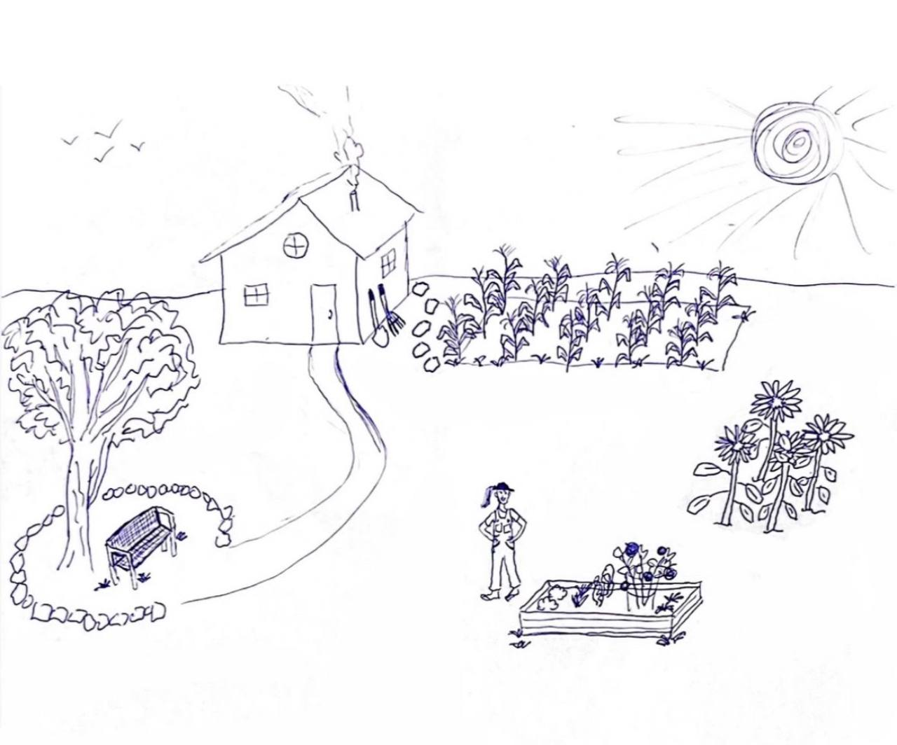

No weeds creep over the crops, no stick is lost under the tree, no bird takes a crop, and the rake and the shovel come to Vanessa's hand from the start.
Birds still visit and perch, but they never take a crop.
Move: touch and drag anywhere, or WASD / arrow keys. Stand still beside something to work on it: take the rake or the shovel where they lean by the house to weed or dig; once she has fetched each one, it comes to her hand at the job. Walk past the pile by the house to leave wood and stone there, and past the yard-sale table to set out your crops. Once six are out, tap Yard Sale (or the table); more tables come as the house grows. The bottom line counts what the next build still needs; once you have it all it turns into DIY: go to the part and tap it (or E / Space). Blueprint, or B, shows or hides the outlines of unbuilt things.